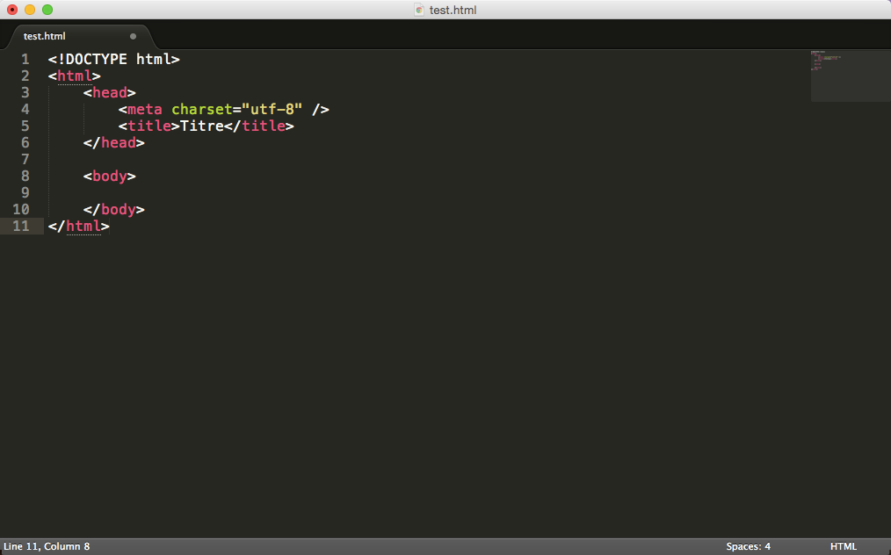

Créer votre site web avec HTML5 et CSS3
HTML et CSS : deux langages pour créer un site web
Pour créer un site web, on doit donner des instructions à l’ordinateur. Il ne suffit pas simplement de taper le texte qui devra figurer dans le site (comme on le ferait dans un traitement de texte Word, par exemple), il faut aussi indiquer où placer ce texte, insérer des images, faire des liens entre les pages, etc.
Les rôles de HTML et CSS
Pour expliquer à l’ordinateur ce que vous voulez faire, il va falloir utiliser un langage qu’il comprend. Et c’est là que les choses se corsent, parce qu’il va falloir apprendre deux langages !
Vous devez vous dire que manipuler deux langages va être deux fois plus complexe et deux fois plus long à apprendre… mais ce n’est pas le cas ! Je vous rassure, s’il y a deux langages c’est, au contraire, pour faciliter les choses. Nous allons avoir affaire à deux langages qui se complètent car ils ont des rôles différents :
HTML (HyperText Markup Language) : il a fait son apparition dès 1991 lors du lancement du Web. Son rôle est de gérer et organiser le contenu. C’est donc en HTML que vous écrirez ce qui doit être affiché sur la page : du texte, des liens, des images… Vous direz par exemple : « Ceci est mon titre, ceci est mon menu, voici le texte principal de la page, voici une image à afficher, etc. » ;
CSS (Cascading Style Sheets, aussi appelées feuilles de style) : le rôle du CSS est de gérer l’apparence de la page web (agencement, positionnement, décoration, couleurs, taille du texte…). Ce langage est venu compléter le HTML en 1996.
L’éditeur de texte
Il existe effectivement de nombreux logiciels dédiés à la création de sites web. Mais, je vous rassure, vous n’aurez pas à débourser un seul centime. Pourquoi aller chercher un logiciel payant et compliqué, alors que vous avez déjà tout ce qu’il faut chez vous ?
Eh oui, accrochez-vous bien parce qu’il suffit de… Bloc-Notes !

les éditeurs de texte : ce sont des programmes dédiés à l’écriture de code. On peut en général les utiliser pour de multiples langages, pas seulement HTML et CSS. Ils se révèlent être de puissants alliés pour les créateurs de sites web !
Les navigateurs
Le navigateur est le programme qui nous permet de voir les sites web. Comme je vous l’ai expliqué plus tôt, le travail du navigateur est de lire le code HTML et CSS pour afficher un résultat visuel à l’écran. Si votre code CSS dit « Les titres sont en rouge », alors le navigateur affichera les titres en rouge. Le rôle du navigateur est donc essentiel !
On ne dirait pas, mais un navigateur est un programme extrêmement complexe. En effet, comprendre le code HTML et CSS n’est pas une mince affaire. Le principal problème, vous vous en rendrez vite compte, c’est que les différents navigateurs n’affichent pas le même site exactement de la même façon ! Il faudra vous y faire et prendre l’habitude de vérifier régulièrement que votre site fonctionne correctement sur la plupart des navigateurs
Les balises
Les pages HTML sont remplies de ce qu’on appelle des balises. Celles-ci sont invisibles à l’écran pour vos visiteurs, mais elles permettent à l’ordinateur de comprendre ce qu’il doit afficher.
Les balises se repèrent facilement. Elles sont entourées de « chevrons », c’est-à-dire des symboles < et > , comme ceci : < balise >
On distingue deux types de balises : les balises en paires et les balises orphelines.
Les balises en paires
Elles s’ouvrent, contiennent du texte, et se ferment plus loin. On distingue une balise ouvrante et une balise fermante qui indique que le titre se termine. Cela signifie pour l’ordinateur que tout ce qui n’est pas entre ces deux balises… n’est pas un titre
Les balises orphelines
Ce sont des balises qui servent le plus souvent à insérer un élément à un endroit précis (par exemple une image). Il n’est pas nécessaire de délimiter le début et la fin de l’image, on veut juste dire à l’ordinateur « Insère une image ici ».
Notez que le / de fin n’est pas obligatoire. On pourrait écrire seulement
Les attributs
Les attributs sont un peu les options des balises. Ils viennent les compléter pour donner des informations supplémentaires. L’attribut se place après le nom de la balise ouvrante et a le plus souvent une valeur.
Prenons la balise image que nous venons de voir. Seule, elle ne sert pas à grand-chose. On pourrait rajouter un attribut qui indique le nom de l’image à afficher :
image nom=“photo.jpg”
L’ordinateur comprend alors qu’il doit afficher l’image contenue dans le fichier photo.jpg.
Structure de base d’une page HTML5
Ce code correspond à la base d’une page web en HTML5: 
Le doctype
La toute première ligne s’appelle le doctype. Elle est indispensable car c’est elle qui indique qu’il s’agit bien d’une page web HTML. Ce n’est pas vraiment une balise comme les autres (elle commence par un point d’exclamation). Vous pouvez considérer que c’est un peu l’exception qui confirme la règle.
La balise html
C’est la balise principale du code. Elle englobe tout le contenu de votre page. Comme vous pouvez le voir, la balise fermante /html se trouve tout à la fin du code !
L’en-tête (head) et le corps (body)
Une page web est constituée de deux parties :
L’en-tête : cette section donne quelques informations générales sur la page, comme son titre, l’encodage (pour la gestion des caractères spéciaux), etc. Cette section est généralement assez courte. Les informations que contient l’en-tête ne sont pas affichées sur la page, ce sont simplement des informations générales à destination de l’ordinateur. Elles sont cependant très importantes !
Le corps : c’est là que se trouve la partie principale de la page. Tout ce que nous écrirons ici sera affiché à l’écran. C’est à l’intérieur du corps que nous écrirons la majeure partie de notre code.
L’encodage ( charset )
Cette balise indique l’encodage utilisé dans votre fichier .html
Sans rentrer dans les détails, car cela pourrait vite devenir compliqué, l’encodage indique la façon dont le fichier est enregistré. C’est lui qui détermine comment les caractères spéciaux vont s’afficher (accents, idéogrammes chinois et japonais, caractères arabes, etc.).
Les commentaires
Un commentaire en HTML est un texte qui sert simplement de mémo. Il n’est pas affiché, il n’est pas lu par l’ordinateur, cela ne change rien à l’affichage de la page.
Cela sert à vous et aux personnes qui liront le code source de votre page. Vous pouvez utiliser les commentaires pour laisser des indications sur le fonctionnement de votre page.
Les paragraphes
La plupart du temps, lorsqu’on écrit du texte dans une page web, on le fait à l’intérieur de paragraphes. Le langage HTML propose justement la balise p pour délimiter les paragraphes.
on écrit le contenu du site web entre les balises body. Il nous suffit donc de mettre notre paragraphe entre ces deux balises et nous aurons enfin notre première vraie page web avec du texte !
Les titres
Lorsque le contenu de votre page va s’étoffer avec de nombreux paragraphes, il va devenir difficile pour vos visiteurs de se repérer. C’est là que les titres deviennent utiles.
En HTML, on est verni, on a le droit d’utiliser six niveaux de titres différents. Je veux dire par là qu’on peut dire « Ceci est un titre très important », « Ceci est un titre un peu moins important », « Ceci est un titre encore moins important », etc. On a donc six balises de titres différentes :
h1 : signifie « titre très important ». En général, on s’en sert pour afficher le titre de la page au début ;
h2 : signifie « titre important » ;
h3 : pareil, c’est un titre un peu moins important (on peut dire un « sous-titre », si vous voulez) ;
h4 : titre encore moins important ;
h5 : titre pas important ;
h6 : titre vraiment, mais alors là vraiment pas important du tout.
En résumé
- Il y a eu plusieurs versions des langages HTML et CSS. Les dernières versions sont HTML5 et CSS3.
- Le navigateur web est un programme qui permet d’afficher des sites web. Il lit les langages HTML et CSS pour savoir ce qu’il doit afficher.
- On utilise l’éditeur de texte pour créer un fichier ayant l’extension .html (par exemple : test.html ). Ce sera notre page web.
- Les balises sont parfois accompagnées d’attributs pour donner des indications supplémentaires.
- Le HTML comporte de nombreuses balises qui nous permettent d’organiser le texte de notre page. Ces balises donnent des indications comme « Ceci est un paragraphe », « Ceci est un titre », etc.
- Les paragraphes sont définis par la balise p , et les sauts de ligne par la balise br.
- Il existe six niveaux de titre, de h1 à h6 , à utiliser selon l’importance du titre.
Contenu
- HTML et CSS : deux langages pour créer un site web
- L’éditeur de texte
- Les navigateurs
- Les balises
- Les attributs
- Structure de base d’une page HTML5
- Les commentaires
- Les paragraphes
- Les titres
- En résumé
Laissez un commentaire